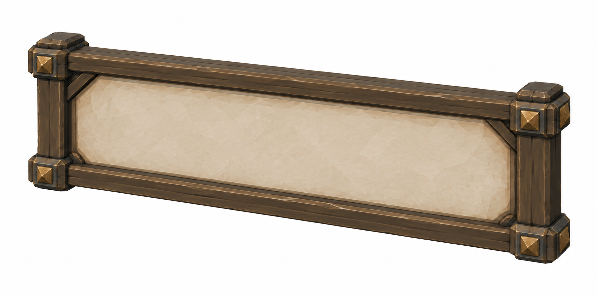
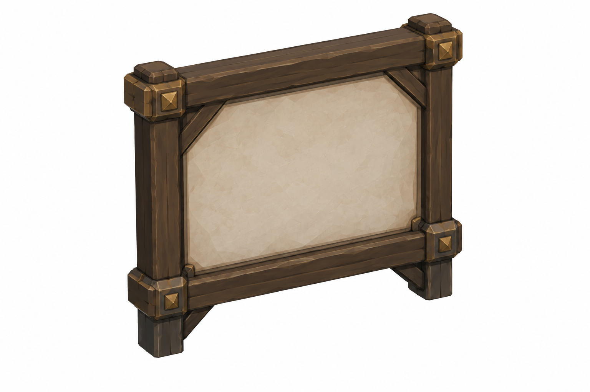
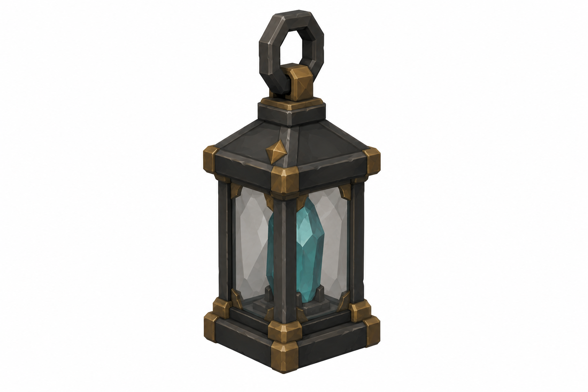
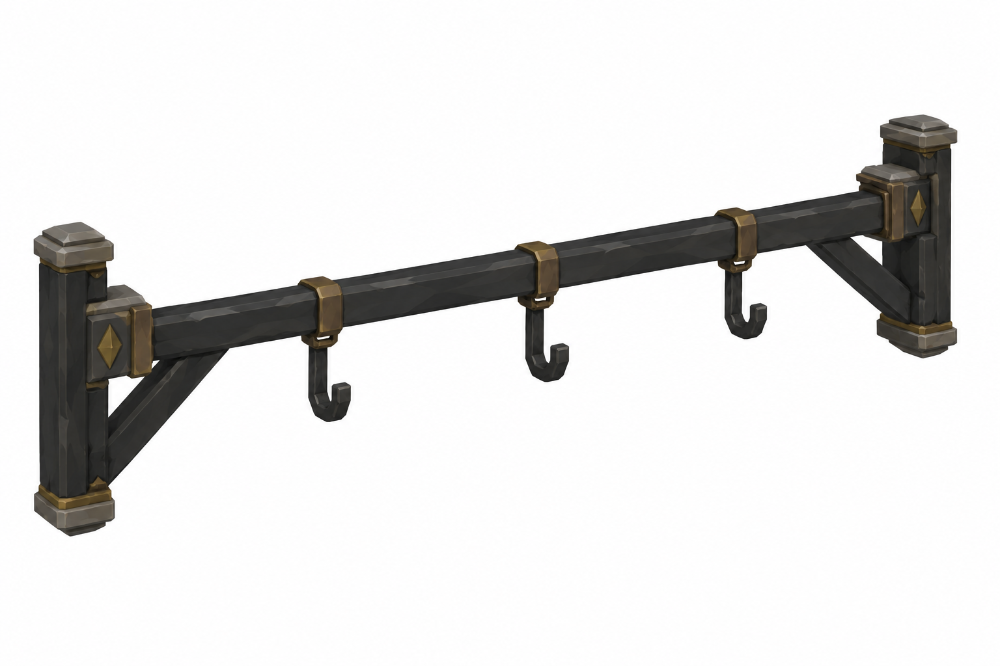

Görseller tasarım referansıdır. Ölçüler hedef sayılarıdır; raster oranları yaklaşık, gerçek mesh/Unity fit doğrulanmadı. Tripo'ya geçilmedi. Git/Jira gönderimi bu taslak için yapılmadı.
Sayaç durumları · deterministik konsept
0 / 3
0 yanan shard sliver · flame yok1 / 3
1 yanan shard sliver · flame yok2 / 3
2 yanan shard sliver · flame yok3 / 3
3 yanan shard sliver · flame yokOpen
3 white-gold · materyal/ışık değişimi, yeni mesh yok. Portal≈5.6m; pitch1.1m. Hub ayrı tally yok. Face repaintable runtime texture; map görüntüsü sonrasında yeniden çizilir.
Tekil45° referanslar

LandscapeFrame · outer3.16 ×1.57 m; face3 ×1.41Style/semantic review completed; exact proportions and mesh fit remain unverified.
SquareFrame · outer3.16 ×3m; face3 ×2.84Style/semantic review completed; exact proportions and mesh fit remain unverified.
TallyLantern · W0.35 ×H0.5mStyle/semantic review completed; exact proportions and mesh fit remain unverified.
TallyBar · 2.8m; hookpitch1.1mStyle/semantic review completed; exact proportions and mesh fit remain unverified.